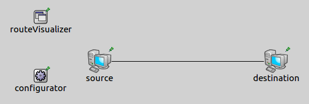
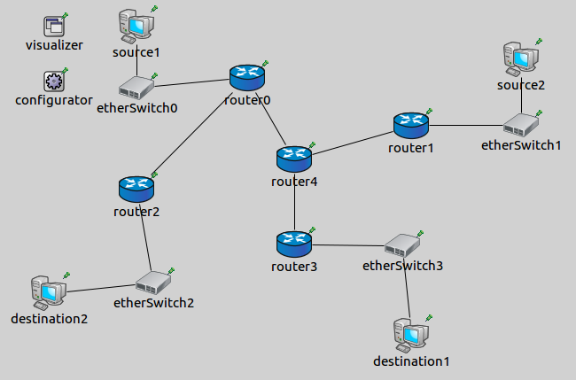

In complex, non-trivial or in ad hoc networks it is difficult to determine the path of a packet between remote hosts. Visualizing network routes is advantageous, because we can trace a packet's route from the source to the destination. It is especially helpful if there is a dynamic routing protocol in the network. If there is a change in the routes e.g because a router go wrong, we get information immediately about the network route changes.
The example consists of 4 simulation models, each demonstrating different features of network route visualization.
The NetworkRouteVisualizer keeps track of active network routes. A network route between two nodes is considered active if a packet reaches the destination's network layer. By default routes are not displayed, we can enable their vsisualization by switching the displayRoutes parameter to true.
The links are represented visually by solid arrows. The arrow's starting point is the source node and its endpoint is the destination node. The line goes through those intermediate devices which are the part of the third layer path.
The visualizer has filtering parameters, like nodeFilter, interfaceFilter and packetFilter. Using these we can specify which network routes are shown. By default all nodes, all interfaces and all packets are considered for displaying network routes. It is possible to use logical expressions as the filter's parameter, e.g packetFilter = "ping* or tcp*" shows the ping and the tcp network routes.
This simulation demonstrates how to enable the default look of the visualization of network routes.
The network for this configuration contains two Standardhosts, an IPv4NetworkConfigurator module and a NetworkRouteVisualizer module.

The source pings the destination and an additional line enables the visualizer with the displayRoutes parameter:
The ping messages activate a network routes between the devices. The further packets, like ARP messages go up to the second layer only, so they don't activate a network route. After 1 second in real time, the network routes fade out.
The simulation demonstrates the visualization of static routes in a non-trivial network. We also show how the packetFilter parameter works. Here is the network for this configuration: 
The topology consists of five routers, four switches and four hosts. There are two sources and two destinations. Similarily to the previous configuration, the sources ping the destinations. We enable network routes with the displayRoutes parameter, but only when the message type is ping. TODO
The following video shows what happens, when we start the simulation:
Only the network routes of the ping messages are displayed because of the packetFilter parameter. Each arrow represents a different route.
This example only demonstrated the key features of network route visualization. For more information, refer to the NetworkRouteVisualizer NED documentation.